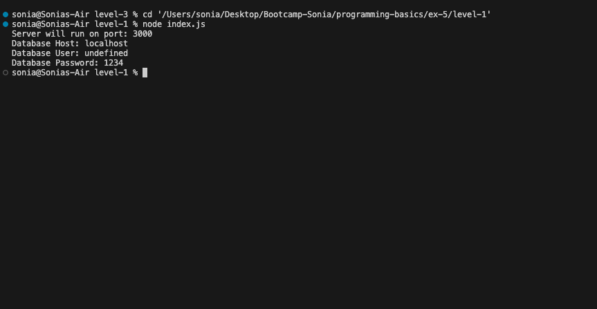
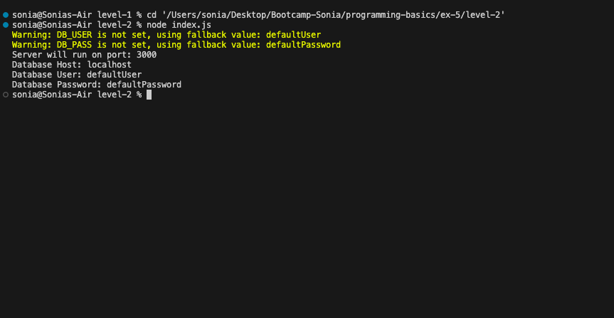
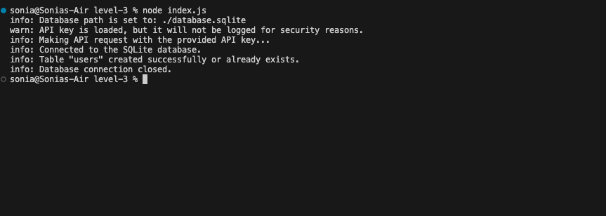

Exercise 5: Managing Environment Variables with dotenv
Level 1
Problem Description:
- Install
dotenv and create a .env file with configuration variables (e.g., PORT, DB_HOST).
- Load the variables into the program and use them for configuration.
Exit Criteria: The program reads and uses values from .env.

Level 2
Problem Description:
- Add fallback values for missing environment variables.
- Log a warning when a variable is missing.
Exit Criteria: The program handles missing variables gracefully.

Level 3
Problem Description:
- Use environment variables to configure a database connection and API credentials. (For this exercise, use a SQLite file-based database.)
- Securely log sensitive configuration details.
Exit Criteria: Sensitive information is handled securely.

Challenges I Faced
- Ensuring sensitive information is not exposed in logs.
- Handling missing or invalid environment variables during runtime.
- Setting up the SQLite database connection using environment variables.
Improvements
- Added clear fallback values for missing configuration variables.
- Documented the structure and usage of the
.env file.
- Implemented secure logging mechanisms to mask sensitive details.